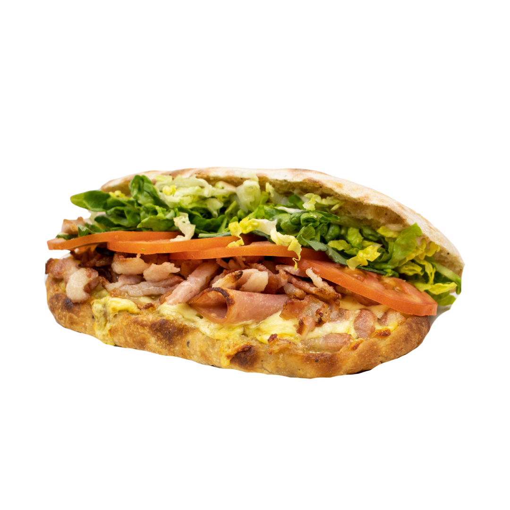

Características
Pan brioche suave.
Buena estructura para hamburguesas.
Ideal para alto volumen.
Línea de producto
La línea Standard de Amasamos está diseñada para restaurantes que buscan calidad constante y excelente relación costo-beneficio.
Pan brioche suave.
Buena estructura para hamburguesas.
Ideal para alto volumen.

Perfecto para restaurantes de hamburguesas y negocios de comida rápida.